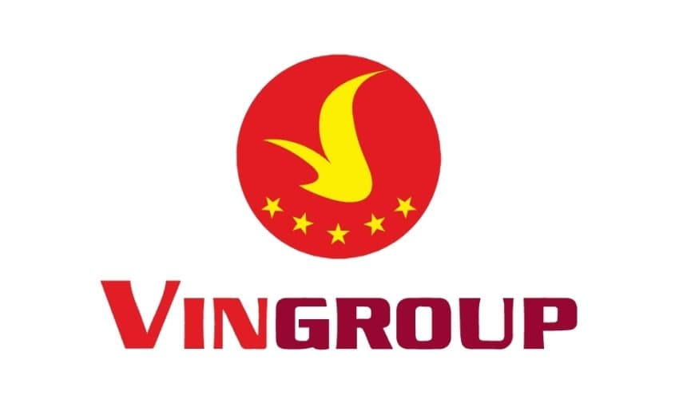
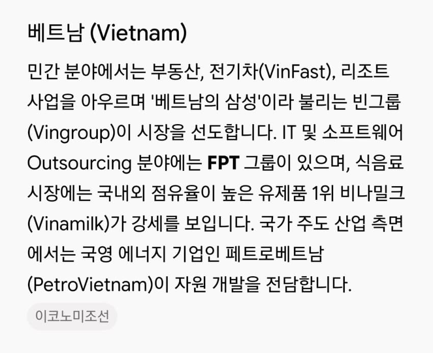
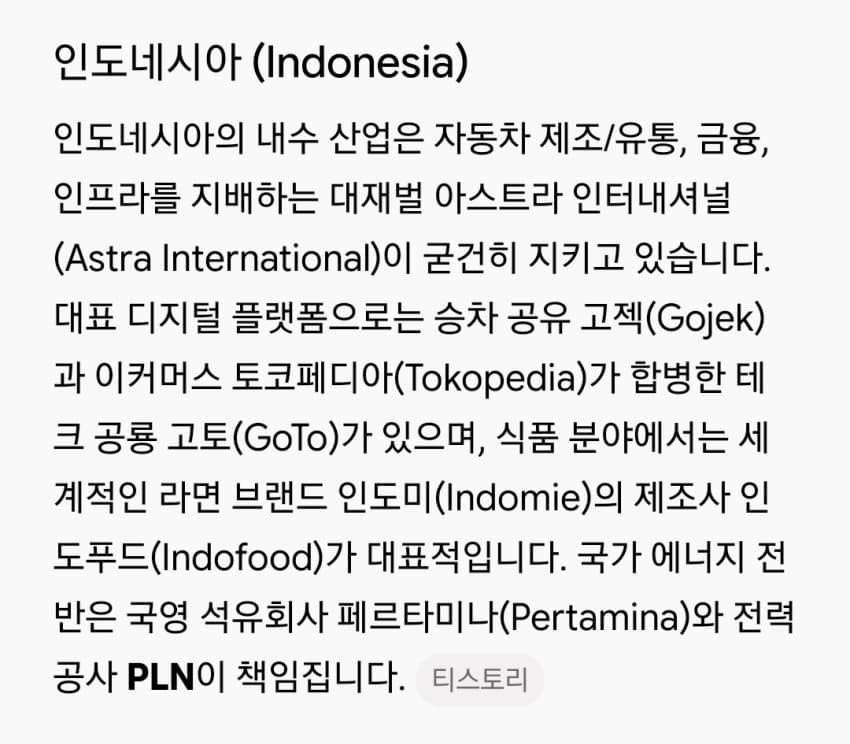
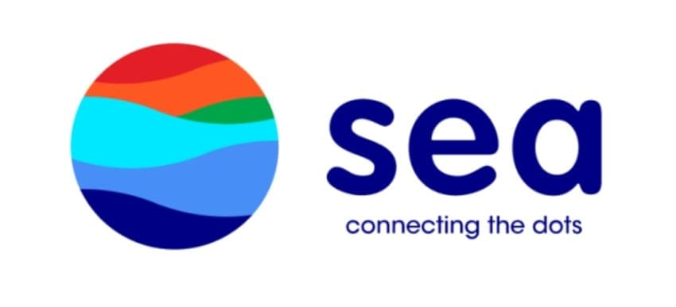
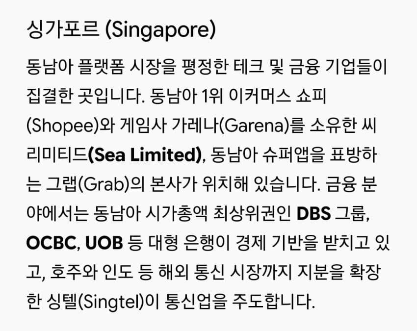
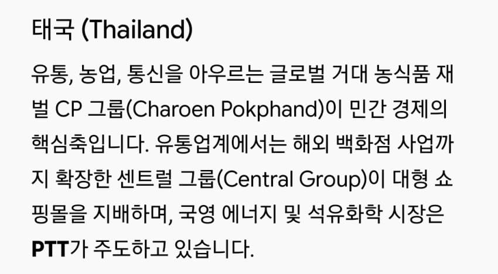
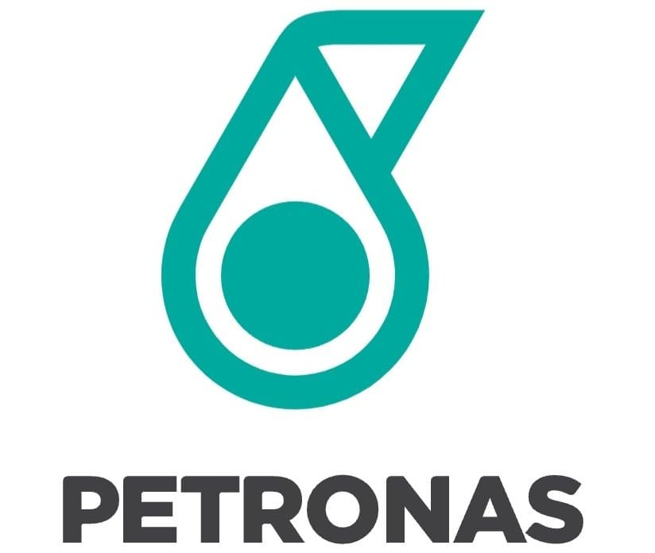
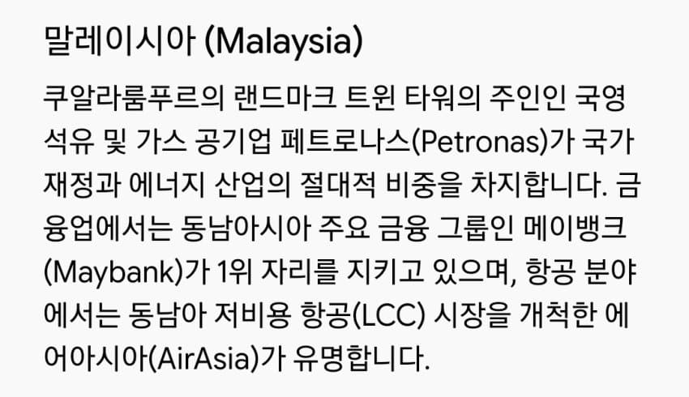
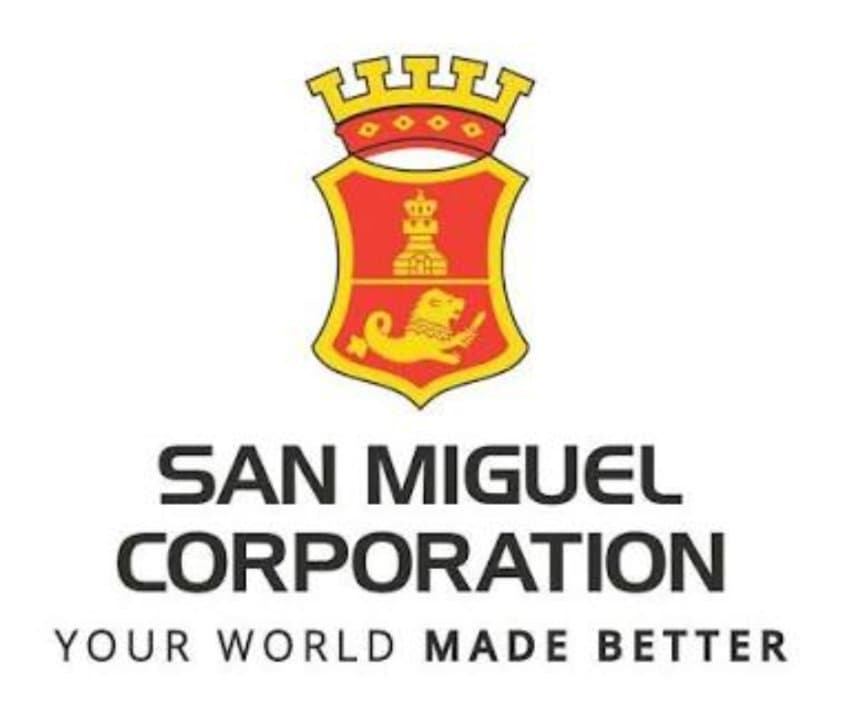
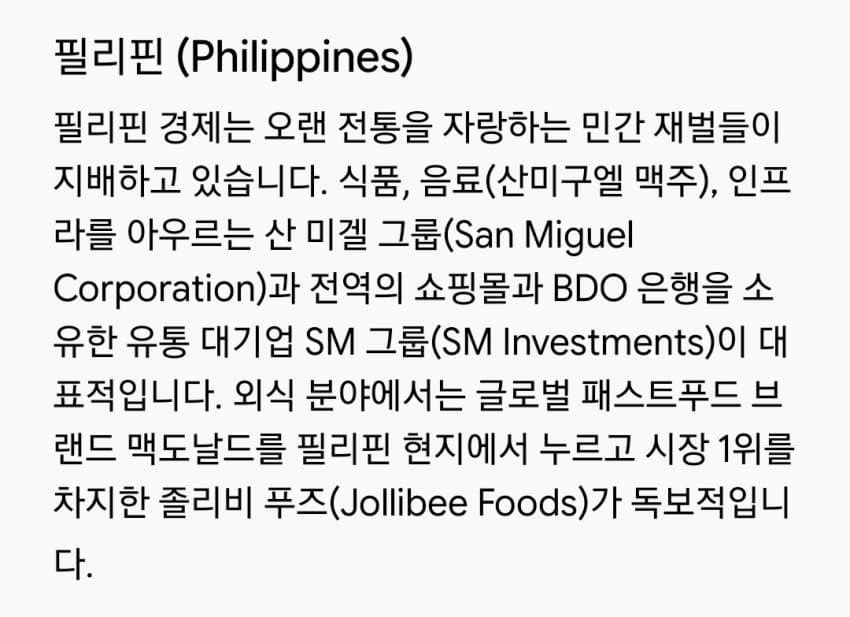
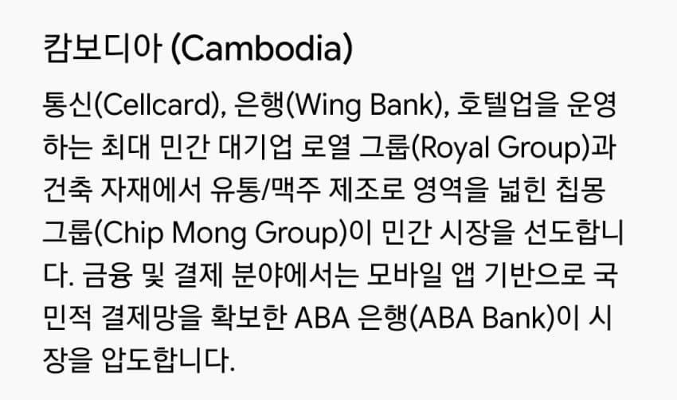
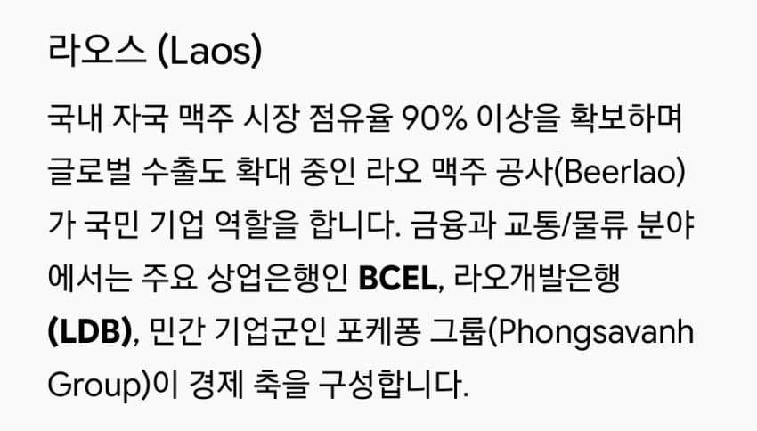
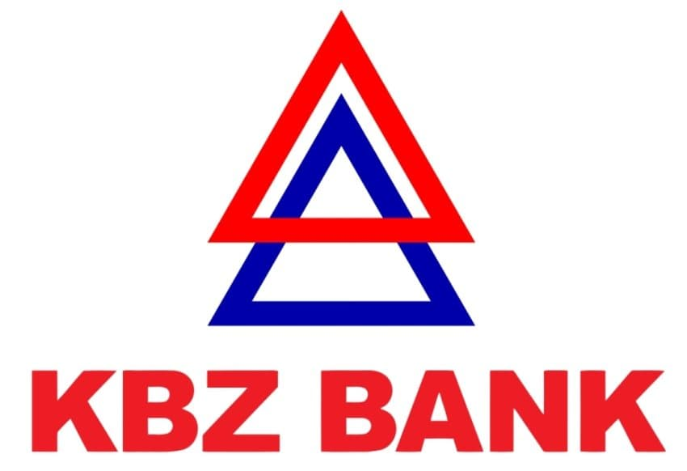
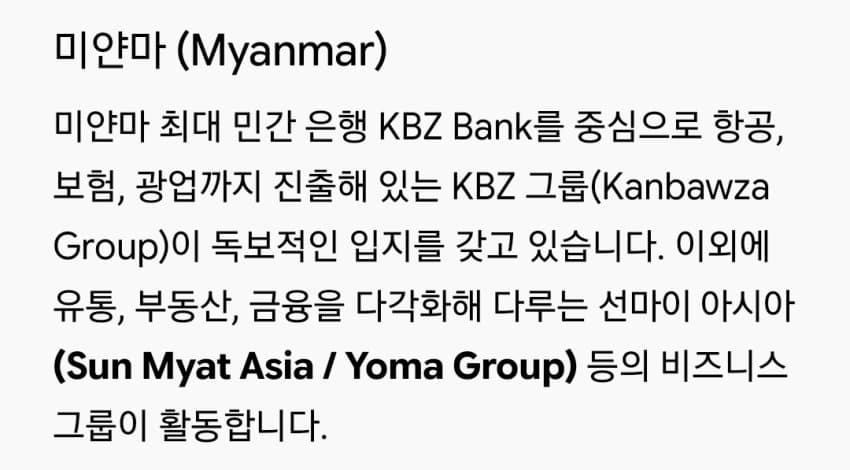
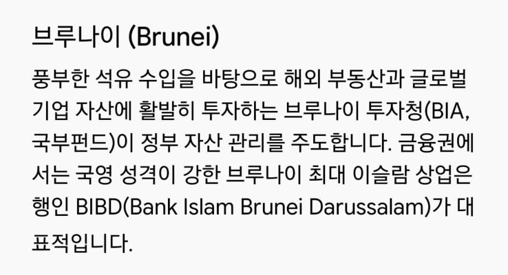
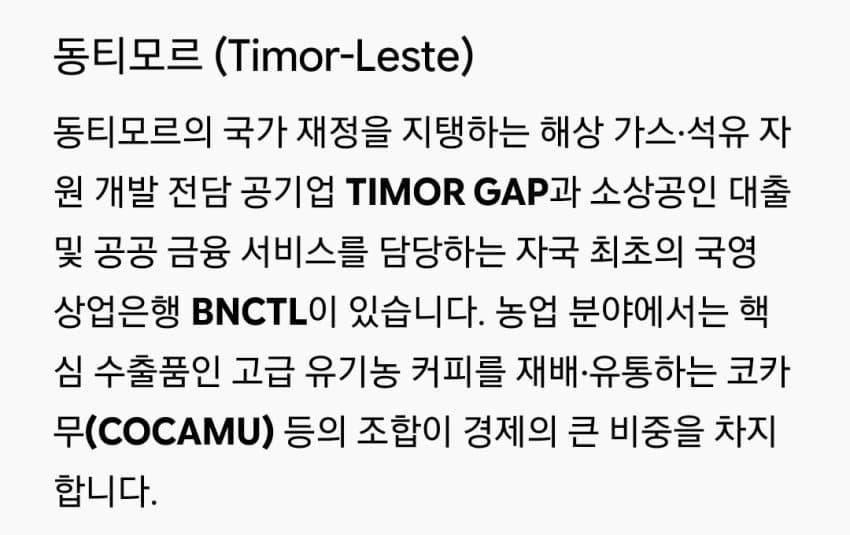
















댓글
수집 당시 댓글 45개
성소피아대성당 · 11.10 19:08:13
· 프븨 · 11.10 19:12:19
땨뗘(봇) · 11.12 07:20:06
파도. · 11.12 07:21:08
· 말랑보추 · 11.12 07:44:56
· 파도. · 11.12 07:59:09
ㅌㅇ · 11.12 07:34:31
ㅇㅇ · 11.12 07:35:49
· ㅇㅇ · 11.12 07:36:37
· ㅇㅇ · 11.12 07:39:35
· ㅇㅇ · 11.12 07:47:31
· 0000 · 11.12 07:52:14
· ㅇㅇ · 11.12 07:59:33
· BIGGIE · 11.12 09:12:27
· ㅂ · 11.12 13:21:05
ㅇㅇ · 11.12 07:40:51
ㅇㅇ · 11.12 07:46:25
ㅇㅇ · 11.12 07:57:31
· ㅇㅇ · 11.12 08:15:40
XX · 11.12 08:06:39
ㅇㅇ · 11.12 08:15:47
노닺 · 11.12 08:23:37
ㅇㅇ · 11.12 08:26:59
ㅇㅇ · 11.12 08:34:03
백갤러 · 11.12 08:35:30
아빠왔노
ㅇㅇ · 11.12 08:58:55
· ㅇㅇ · 11.12 12:36:42
ㅇㅇ · 11.12 09:16:09
ㅇㅇ · 11.12 09:28:01
· ㅇㅇ · 11.12 10:09:56
hawaii50 · 11.12 09:29:16
좃구녕 · 11.12 09:32:47
Кошечка · 11.12 09:45:41
ㅇㅇ · 11.12 10:01:57
ㅇㅇ · 11.12 10:24:31
ㅇㅇ · 11.12 12:28:59
· ㅂ · 11.12 13:13:47
원또 · 11.12 12:56:17
Machiavelli · 11.12 13:17:56
프라펫 · 11.12 13:22:53
ㅇㅇ · 11.12 13:23:28
ㅇㅇ · 11.12 13:26:48
ㅇㅇ · 11.12 13:27:18
ㅇㅇ · 11.12 14:14:54
ㅇㅇ · 11.12 14:37:40